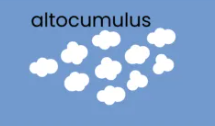

Middle clouds
The middle clouds can have an heigh from 2km up to 7km.
The middle clouds names are:
Click here to download the pdf version of this page.
Altostratus
Altostratus clouds are thin clouds.
They are very light blue color.
Rain can sometimes fall from it.
Altocumulus
Altocumulus are very light color, almost white.
They usually form in groups like cotton balls.
They are about 1km thick.
